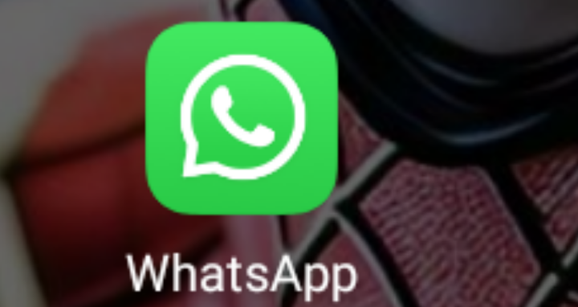

when you temporary banned using Whatsapp,make sure u using from playstore not for chrome unofficial Whatsapp u immediately banned using those Whatsapp because that a temporary banned next step how to unbanned Whatsapp using your temporary number that banned!!

Whatsapp allowed to unbanned Whatsapp for 24hrs depends other allowed to recovery for next 2 months to recovery so get touched with us to recovery your WhatsApp for 24hrs contact us to recovery Whatsapp!!

using the Whatsapp from play store,,
stop using
gb Whatsapp,fm Whatsapp,gold Whatsapp .etc from chrome,
join our Whatsapp group to help.. types of trick for Whatsapp to unbanned and banned for temporary.......
web created by ICONICS-TECH
Whatsapp group chat